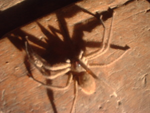
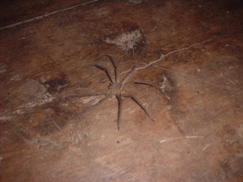
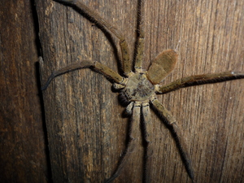

talubahi   
/talubahi/
n.
a large kind of house spider
Ka seini ne kalasiyan te kalawe-lawè iyan sika se amana ne masiyapat ne egweil-weil, dakel seini ne kalasi wey meyilut degma seini e eg-ubpè te baley, emun ke eg-anak seini kenè din egpitasan ka anak din layun dè diyè te getek din.
Nakarakep a gabii te talubahi diyè baley ney.
I caught a spider last night at home.
Eng. type of a spider; spider
Tag. gagamba
Ceb. damang
OCM: Fauna (136)
DDP: Spider (1.6.1.8)
Online dict status: -
Usage level: M
Created: 25/May/2009
Updated by: QDL,NJK
Last updated: 13/Oct/2009
This page last updated: 19/May/2012
Copyright © 2009-2010, Matigsalug Language Christian Association, Inc